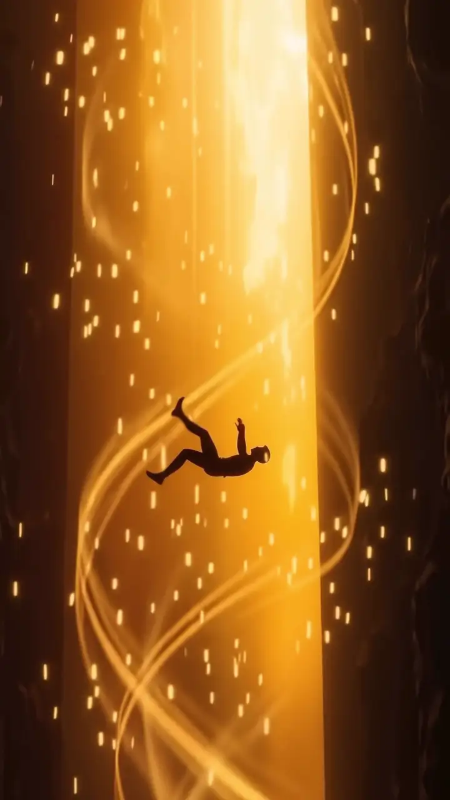
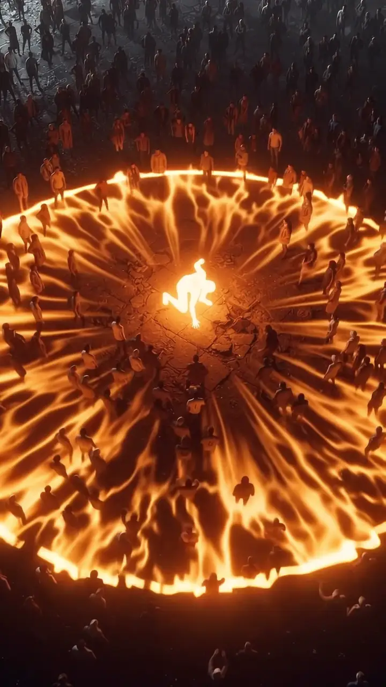
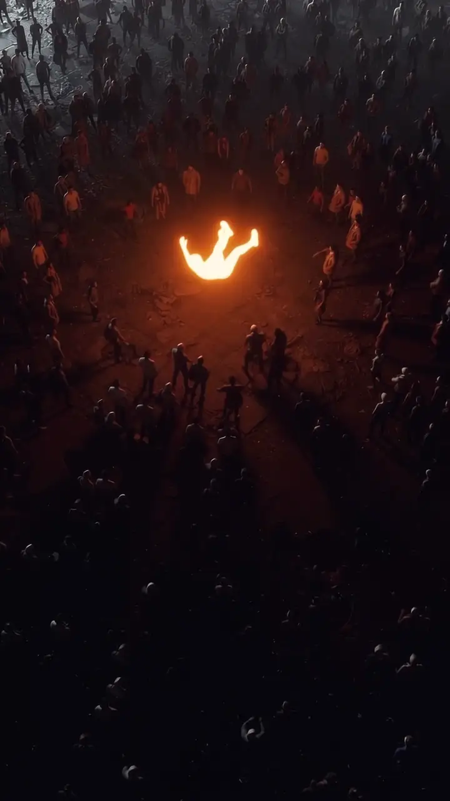

Computer Science Engineer & Creative Technologist.
This portfolio starts with a fall.
0% of the fall loaded
Computer Science Engineer & Creative Technologist.
This portfolio starts with a fall.



I build at the intersection of computer science, intelligent systems, and cinematic design. Where raw code meets visual rhythm, and software refuses to be ordinary.
Computer Science Engineer at Jyothy Institute of Technology, Bangalore. AWS Cloud Practitioner certified (ELEVATE Program), cybersecurity trained, and relentless about building impactful real-world software.
Based in Bangalore. Active Vibe Coder & AI-assisted developer exploring LLMs, agentic workflows, and high-performance web experiences. Open to software engineering and AI/ML opportunities.
Every project begins in the unknown.
Code is the craft; vision is the fuel.
This is where we build the future.